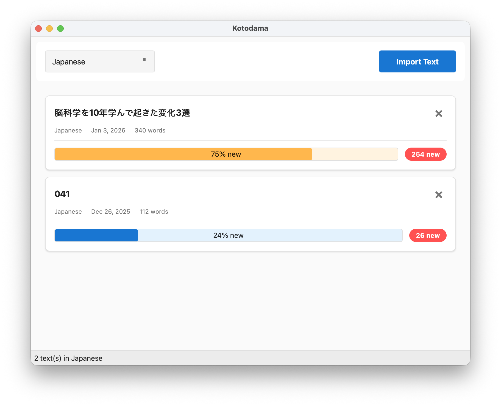
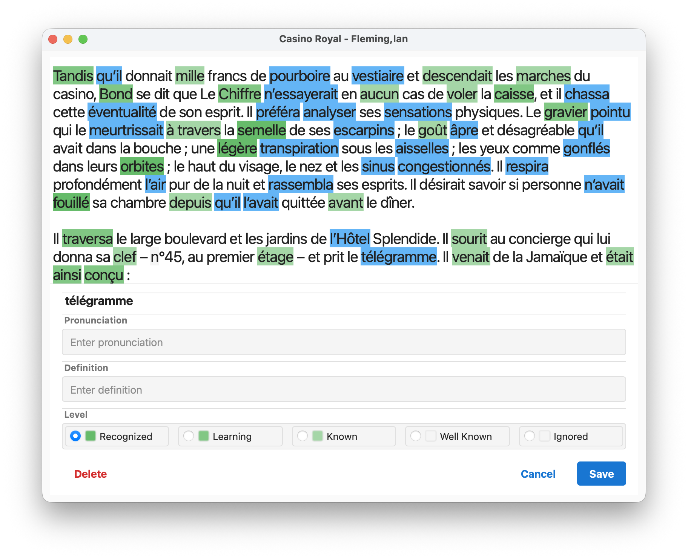

A desktop language-learning application that turns reading into your vocabulary trainer.
Import texts, read naturally, and track every word and phrase you encounter — from first sight to well known. Built with Qt for macOS, Windows, and Linux.

Library & Text Import

Reader with Highlighting
Space to edit its pronunciation, definition, and level without leaving the reader.
1–5 to set its level instantly.
Pre-built binaries are attached to each latest release:
Kotodama is free software licensed under the GNU GPL v3. It uses the Qt framework, available under the LGPL v3.